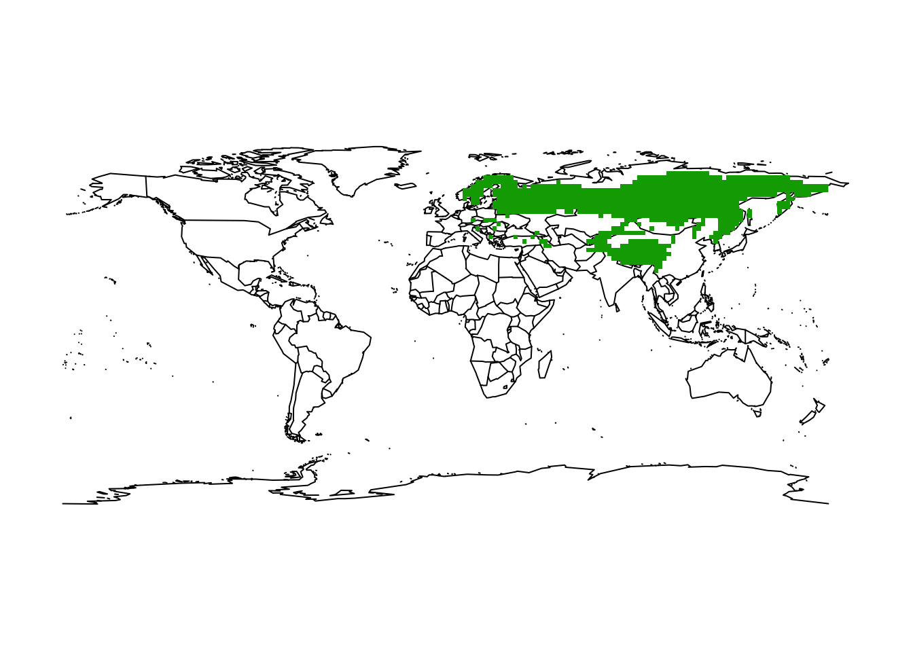
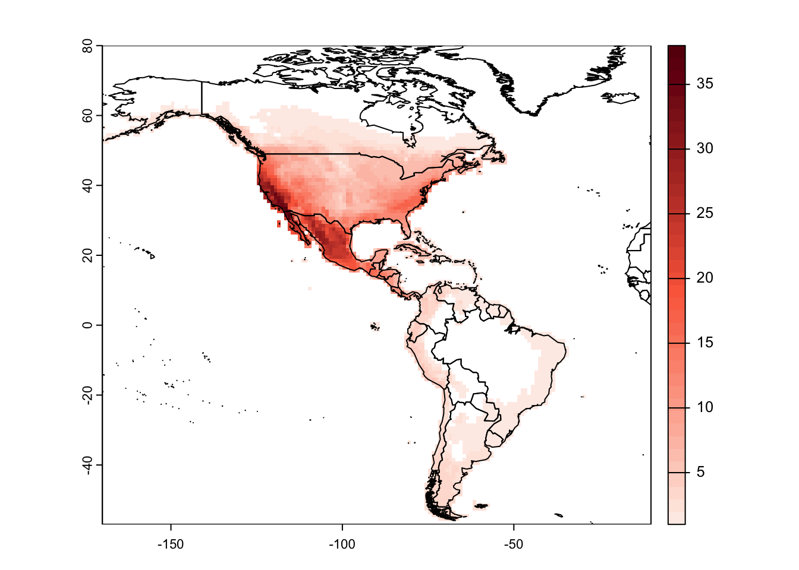

Species range maps
RStudio project
Open the RStudio project that we created in the first session. I recommend to use this RStudio project for the entire course and within the RStudio project create separate R scripts for each session.
- Create a new empty R script by going to the tab “File”, select “New File” and then “R script”
- In the new R script, type
# Session a4: Species range mapsand save the file in your folder “scripts” within your project folder, e.g. as “a4_RangeMaps.R”
We are living in an age of big data where biodiversity are becoming increasingly available in digital format and at a global scale (Wüest et al. 2020). Many different types of biodiversity data exist, e.g. from standardised monitoring schemes, citizen science platforms, or expert knowledge. Each of these data types comes with own challenges. Within this module, I want to provide some first impressions on how you can obtain and process typical types of species data. Specifically, in this session, we will work with range maps of terrestrial animals and plants, while occurrence data for terrestrial species in GBIF (the Global Biodiversity Information facility) and for marine species in OBIS (the Ocean Biodiversity Information System) will be covered later in the species distribution modelling part.
1 Obtaining range maps
We rarely have detailed biodiversity data available over large geographic extents. At broad (continental to global) extents, expert-drawn range maps (also called extent-of-occurrence maps) are often the primary data source on species distributions.
1.1 IUCN range maps
The IUCN (the International Union for the Conservation of Nature) provides expert range maps for a large number of species including mammals, birds (through BirdLife International), amphibians, reptiles, and freshwater fishes. There are also some range maps on plants and marine species, but these are very limited taxonomically. Have a look for which taxa range maps are available: https://www.iucnredlist.org/resources/spatial-data-download. You can download them for free, but you should provide some information on your work to obtain the data.
Most of the IUCN data are provided in the form of shapefiles. In
practical 2, we have already loaded the range map of the Alpine
shrew and learned how to use the package terra for
reading in the shapefiles. You may remember that the shapefile is
recognized as SpatVector object.
library(terra)
# Load the shapefile
(shrew <- terra::vect('data/IUCN_Sorex_alpinus.shp'))## class : SpatVector
## geometry : polygons
## dimensions : 1, 27 (geometries, attributes)
## extent : 5.733728, 26.67935, 42.20601, 51.89984 (xmin, xmax, ymin, ymax)
## source : IUCN_Sorex_alpinus.shp
## coord. ref. : lon/lat WGS 84 (EPSG:4326)
## names : id_no binomial presence origin seasonal compiler yrcompiled
## type : <chr> <chr> <int> <int> <int> <chr> <int>
## values : 29660 Sorex alpinus 1 1 1 IUCN 2008
## citation source dist_comm (and 17 more)
## <chr> <chr> <chr>
## IUCN (Internat~ NA NA# Plot the Central Europe
library(maps)
maps::map('world',xlim=c(5,30), ylim=c(40,55))
# Overlay the range of the Alpine Shrew
plot(shrew, col='red', add=T)Unfortunately, there is no API for the IUCN range maps. So, you need to register with IUCN and then you can download range maps for different taxonomic groups. The range maps for birds come as separate shape files per species, while the range maps of mammals are provided as single shapefile that contains all species. Course participants can download the mammal shapefile from the moodle course - of course, the license agreement by the IUCN apply!
# Read shapefile for all mammals using the raster package:
mammals <- terra::vect('data/MAMMTERR.shp')The shapefile contains the range polygons for all described mammal species. The attribute table contains information on species’ PRESENCE, ORIGIN, and SEASONALity. Please have a look at the metadata to understand the different values these attributes can be coded as.
mammals## class : SpatVector
## geometry : polygons
## dimensions : 43444, 14 (geometries, attributes)
## extent : -180.0001, 180.0025, -56.66595, 90 (xmin, xmax, ymin, ymax)
## source : MAMMTERR.shp
## coord. ref. : lon/lat WGS 84 (EPSG:4326)
## names : BINOMIAL PRESENCE ORIGIN SEASONAL COMPILER YEAR
## type : <chr> <int> <int> <int> <chr> <int>
## values : Amblysomus cor~ 1 1 1 IUCN 2008
## Amblysomus hot~ 1 1 1 IUCN 2008
## Amblysomus mar~ 1 1 1 IUCN 2008
## CITATION SOURCE DIST_COMM ISLAND (and 4 more)
## <chr> <chr> <chr> <chr>
## IUCN (Internat~ NA NA NA
## IUCN (Internat~ NA NA NA
## IUCN (Internat~ NA NA NA# Inspect attribute table
terra::head(mammals)## BINOMIAL PRESENCE ORIGIN SEASONAL COMPILER YEAR
## 1 Amblysomus corriae 1 1 1 IUCN 2008
## 2 Amblysomus hottentotus 1 1 1 IUCN 2008
## 3 Amblysomus marleyi 1 1 1 IUCN 2008
## 4 Amblysomus robustus 1 1 1 IUCN 2008
## 5 Amblysomus septentrionalis 1 1 1 IUCN 2008
## 6 Amblysomus septentrionalis 1 1 1 IUCN 2008
## CITATION SOURCE DIST_COMM ISLAND
## 1 IUCN (International Union for Conservation of Nature) <NA> <NA> <NA>
## 2 IUCN (International Union for Conservation of Nature) <NA> <NA> <NA>
## 3 IUCN (International Union for Conservation of Nature) <NA> <NA> <NA>
## 4 IUCN (International Union for Conservation of Nature) <NA> <NA> <NA>
## 5 IUCN (International Union for Conservation of Nature) <NA> <NA> <NA>
## 6 IUCN (International Union for Conservation of Nature) <NA> <NA> <NA>
## SUBSPECIES SUBPOP SHAPE_area SHAPE_len
## 1 <NA> <NA> 4.93503476 15.575123
## 2 <NA> <NA> 19.94471634 28.392110
## 3 <NA> <NA> 0.12779360 1.902574
## 4 <NA> <NA> 0.09936845 1.655898
## 5 <NA> <NA> 0.25763915 2.078154
## 6 <NA> <NA> 2.70333866 7.080348We can search for specific species or species groups in the attribute table in different ways:
# Range map for the species 'Lynx lynx'
terra::subset(mammals, mammals$BINOMIAL == "Lynx lynx")
# Show all entries for the species with the word 'Lynx' in their name
grep('Lynx',mammals$BINOMIAL, value=T)
# Range map for all species with the word 'Lynx' in their name
mammals[grep('Lynx', mammals$BINOMIAL),]We can use the attribute table subsets to select specific polygons that we want to look at.
# Assign range map of the Eurasian lynx to separate object
lynx_lynx <- mammals[mammals$BINOMIAL=='Lynx lynx',]
# Map the range
maps::map('world')
plot(lynx_lynx, col='red', add=T)Test it yourself
- Select another mammal species and plot the range map.
1.2 BIEN range maps
The BIEN
database (Botanical Information and Ecology Network) contains many range
maps on plants, but unfortunately only for the Americas. These can be
accessed using the BIEN package. As illustrative example,
we load the range map for the monkey puzzle tree (or Chilean pine -
Araucaria araucana).
library(BIEN)
# Load the range map for the monkey puzzle
(monkey_puzzle_sf <- BIEN_ranges_load_species('Araucaria_araucana'))## Simple feature collection with 1 feature and 2 fields
## Geometry type: MULTIPOLYGON
## Dimension: XY
## Bounding box: xmin: -109.9819 ymin: -55.73974 xmax: -55.46083 ymax: 62.67197
## Geodetic CRS: WGS 84
## species gid geometry
## 1 Araucaria_araucana 6382 MULTIPOLYGON (((-72.94742 -...The function BIEN_ranges_load_species() will output an
sf polygon, which we simply convert into a
SpatVector object that we already know from the
terra package.
# Change into SpatVector object (terra package)
(monkey_puzzle_terra <- terra::vect(monkey_puzzle_sf))## class : SpatVector
## geometry : polygons
## dimensions : 1, 2 (geometries, attributes)
## extent : -109.9819, -55.46083, -55.73974, 62.67197 (xmin, xmax, ymin, ymax)
## coord. ref. : lon/lat WGS 84 (EPSG:4326)
## names : species gid
## type : <chr> <int>
## values : Araucaria_araucana 6382# Map
maps::map('world',xlim = c(-180,-20),ylim = c(-80,80))
plot(monkey_puzzle_terra,col='red',add=T)The native range of the mokey puzzle is in the Chilean Andes, so clearly the range maps also show areas where the species naturalized.
2 Working with range maps
2.1 Range size and range centre
The terra package allows us to easily calculate the area
of the polygons, meaning the range size of our species. The function
expanse() outputs the area in square meters, kilometers or
hectars.
# Range area of alpine shrew in square kilometers:
terra::expanse(shrew, unit="km")## [1] 490543.3# Range area of monkey puzzle in square kilometers:
terra::expanse(monkey_puzzle_terra, unit="km")## [1] 5783633We can also very easily calculate the centre of gravity or range
centroid from the SpatVector object.
# Range centroid:
terra::centroids(shrew)## class : SpatVector
## geometry : points
## dimensions : 1, 27 (geometries, attributes)
## extent : 16.02645, 16.02645, 46.90336, 46.90336 (xmin, xmax, ymin, ymax)
## coord. ref. : lon/lat WGS 84 (EPSG:4326)
## names : id_no binomial presence origin seasonal compiler yrcompiled
## type : <chr> <chr> <int> <int> <int> <chr> <int>
## values : 29660 Sorex alpinus 1 1 1 IUCN 2008
## citation source dist_comm (and 17 more)
## <chr> <chr> <chr>
## IUCN (Internat~ NA NA# Map the species range and add the centroid to the map
maps::map('world',xlim=c(5,30), ylim=c(40,55))
plot(shrew, col='red', add=T)
points(terra::centroids(shrew), col='blue',cex=3,pch="+")
We need to be careful how to interpret these centroids. They represent the centre of gravity, i.e. the mean coordinates of the distribution (weighted by cell size) but obviously, if we have several patches, the centroid might not even fall within an occupied patch.
If you have a polygons object with multiple layers, you will receive
a vector of areas and also multiple centroids. In such case, you first
have to dissolve the multiple polygon layers. Let’s look at one example.
In the mammals shapefile, the alpine shrew range maps are
actually multiple layers.
# Filter the mammals shapefiles for the shrew
shrew2 <- mammals[mammals$BINOMIAL=='Sorex alpinus',]
# Range area of alpine shrew in square kilometers:
terra::expanse(shrew2, unit="km") # should produce multiple values## [1] 179581.6854 310495.2803 466.3444# Use aggregate() to dissolve the polygon and recalculate area
terra::expanse(aggregate(shrew), unit="km")## [1] 490543.3# Map the species range and add the centroid to the map
maps::map('world',xlim=c(5,30), ylim=c(40,55))
plot(shrew, col='red', add=T)
points(terra::centroids(shrew2), col='blue',cex=3,pch="+")# Map the species range and add the centroid to the map
maps::map('world',xlim=c(5,30), ylim=c(40,55))
plot(shrew, col='red', add=T)
points(terra::centroids(aggregate(shrew2)), col='blue',cex=3,pch="+")In case of the Monkey Puzzle, we have suspected that the range maps also contain non-native areas. We can clip the range maps to a desired spatial extent and then only calculate the range centroid for this (presumed) native range.
# Let's clip the range polygons to (rough coordinates of) South America
monkey_puzzle_SAm <- terra::intersect(monkey_puzzle_terra, ext(-85, -30, -55, 5))
# Map the range and range centroid
maps::map('world',xlim = c(-100,-10),ylim = c(-60,15))
plot(monkey_puzzle_SAm,col='red',add=T)
points(terra::centroids(monkey_puzzle_SAm), col='blue',pch='+', cex=3)Test it yourself
- Use the range map of the mammal species you selected earlier, and calculate the range size and range centroid. Add the point location of your centroid to the range map that you have plotted previously.
2.2 Rasterising range maps
For many applications in macroecology, we need to rasterise the polygons. The problem is that it is unclear at which spatial resolution the range maps accurately represent species occurrences. Hurlbert and Jetz (2007) and Jetz, McPherson, and Guralnick (2012) define the minimum spatial resolution as 100-200km (1-2°), although also resolutions of 50km (0.5°) have been used (Krosby et al. 2015; Zurell et al. 2018).
2.2.1 Rasterising range
maps with terra
Rasterising polygon data is made very easy in the terra
package. We first have to define a SpatRaster object of the
desired resolution, and then transfer the polygon data to the raster
cells.
# By default, terra() will create a 1° resolution map in the *WGS 84* coordinate system (lon/lat).
(r_1deg <- terra::rast())## class : SpatRaster
## dimensions : 180, 360, 1 (nrow, ncol, nlyr)
## resolution : 1, 1 (x, y)
## extent : -180, 180, -90, 90 (xmin, xmax, ymin, ymax)
## coord. ref. : lon/lat WGS 84# Now, rasterise the shrew polygon data to the 1° raster grid
(shrew_1deg <- terra::rasterize(shrew, r_1deg))## class : SpatRaster
## dimensions : 180, 360, 1 (nrow, ncol, nlyr)
## resolution : 1, 1 (x, y)
## extent : -180, 180, -90, 90 (xmin, xmax, ymin, ymax)
## coord. ref. : lon/lat WGS 84
## source(s) : memory
## name : layer
## min value : 1
## max value : 1maps::map('world',xlim=c(5,30), ylim=c(40,55))
plot(shrew, col='red', add=T)
plot(shrew_1deg, add=T, alpha=0.6, legend=F)
Obviously, the margins of the range polgyon and the raster map differ at several places.
Test it yourself
- Check out the help page
?rasterizeand find out what the argumenttouchesis doing. Rasterise the shrew range map again with setting a differenttouchesargument and map the result. What is the difference? - What does the
coverargument do?
We look at a second example, the lynx:
# Define an empty SpatRaster of the world at 2° spatial resolution
(r_2deg <- terra::rast(res=2))## class : SpatRaster
## dimensions : 90, 180, 1 (nrow, ncol, nlyr)
## resolution : 2, 2 (x, y)
## extent : -180, 180, -90, 90 (xmin, xmax, ymin, ymax)
## coord. ref. : lon/lat WGS 84# Rasterize the eurasian lynx data
lynx_lynx_2deg <- terra::rasterize(lynx_lynx, r_2deg)
# Map the occupied grid cells
maps::map('world')
plot(lynx_lynx_2deg, add = TRUE, legend = FALSE)
2.2.2 Rasterising range
maps with letsR
There are also specific macroecological packages in R that facilitate
working with range maps and rasterising them, for example the function
lets.presab() in the letsR package.
At the moment, this package still relies on the older spatial R
package raster and is not available for the newest R
version. We thus have to install an older version and need some
workarounds for the older raster standards.
install_version("letsR", version = "4.0", repos = "http://cran.us.r-project.org")library(letsR)
library(raster)
# The lets.presab() function expects "binomial" as one specific column name in the Polygons data frame
values(shrew)## id_no binomial presence origin seasonal compiler yrcompiled
## 1 29660 Sorex alpinus 1 1 1 IUCN 2008
## citation source dist_comm island
## 1 IUCN (International Union for Conservation of Nature) <NA> <NA> <NA>
## subspecies subpop legend tax_comm kingdom phylum class
## 1 <NA> <NA> Extant (resident) <NA> ANIMALIA CHORDATA MAMMALIA
## order_ family genus category marine terrestial freshwater SHAPE_Leng
## 1 EULIPOTYPHLA SORICIDAE Sorex NT False True False 88.67521
## SHAPE_Area
## 1 57.94637values(monkey_puzzle_terra)## species gid
## 1 Araucaria_araucana 6382# For data obtained from the "BIEN" package, we need to convert the sf object into a SpatialPolygonsDataFrame as lets.presab requires this type of object
monkey_puzzle_raster <- as(monkey_puzzle_sf, "Spatial")
# As the BIEN data do not contain "binomial" as column name, we have to add it:
colnames(monkey_puzzle_raster@data) <- "binomial"
# We set the resolution to 1 degree (the default) and restrict the spatial extent to South America
r_monkey_puzzle <- lets.presab(monkey_puzzle_raster, resol=1, xmn = -100, xmx = -10, ymn = -57, ymx = 15)
# This time, we receive a raster object (instead of SpatRaster)
r_monkey_puzzle##
## Class: PresenceAbsence
## Number of species: 1
## Number of cells: 243
## Resolution: 1, 1 (x, y)# Map the range and range centroid
maps::map('world',xlim = c(-100,-10),ylim = c(-60,15))
plot(monkey_puzzle_SAm,col='blue',add=T)
plot(r_monkey_puzzle, add=T, alpha=0.6, legend=F)
Test it yourself
- Rasterise the range map of the mammal species you selected above.
Try both approaches using the
terrapackage and theletsRpackage.
2.2.3 Bulk-rasterising
multiple species range maps with letsR
The letsR package also allows to bulk-download multiple
species and rasterise them to form a richness map. As first example, we
look at the Pinus genus in the Americas
# Extract the available Pinus species names
(pinus_names <- BIEN_ranges_genus("Pinus",match_names_only = T)[,1])## [1] "Pinus_albicaulis" "Pinus_aristata" "Pinus_arizonica"
## [4] "Pinus_armandii" "Pinus_attenuata" "Pinus_ayacahuite"
## [7] "Pinus_balfouriana" "Pinus_banksiana" "Pinus_brutia"
## [10] "Pinus_bungeana" "Pinus_canariensis" "Pinus_caribaea"
## [13] "Pinus_cembroides" "Pinus_clausa" "Pinus_contorta"
## [16] "Pinus_coulteri" "Pinus_culminicola" "Pinus_densiflora"
## [19] "Pinus_devoniana" "Pinus_douglasiana" "Pinus_durangensis"
## [22] "Pinus_echinata" "Pinus_edulis" "Pinus_elliottii"
## [25] "Pinus_engelmannii" "Pinus_flexilis" "Pinus_georginae"
## [28] "Pinus_glabra" "Pinus_greggii" "Pinus_halepensis"
## [31] "Pinus_hartwegii" "Pinus_herrerae" "Pinus_jeffreyi"
## [34] "Pinus_koraiensis" "Pinus_lambertiana" "Pinus_lawsonii"
## [37] "Pinus_leiophylla" "Pinus_longaeva" "Pinus_luchuensis"
## [40] "Pinus_lumholtzii" "Pinus_luzmariae" "Pinus_maximartinezii"
## [43] "Pinus_maximinoi" "Pinus_monophylla" "Pinus_montezumae"
## [46] "Pinus_monticola" "Pinus_mugo" "Pinus_muricata"
## [49] "Pinus_nelsonii" "Pinus_nigra" "Pinus_oocarpa"
## [52] "Pinus_palustris" "Pinus_parviflora" "Pinus_patula"
## [55] "Pinus_peuce" "Pinus_pinaster" "Pinus_pinceana"
## [58] "Pinus_pinea" "Pinus_ponderosa" "Pinus_praetermissa"
## [61] "Pinus_pringlei" "Pinus_pseudostrobus" "Pinus_pumila"
## [64] "Pinus_pungens" "Pinus_quadrifolia" "Pinus_radiata"
## [67] "Pinus_remota" "Pinus_resinosa" "Pinus_rigida"
## [70] "Pinus_roxburghii" "Pinus_rzedowskii" "Pinus_sabiniana"
## [73] "Pinus_serotina" "Pinus_strobiformis" "Pinus_strobus"
## [76] "Pinus_sylvestris" "Pinus_tabuliformis" "Pinus_taeda"
## [79] "Pinus_tecunumanii" "Pinus_teocote" "Pinus_thunbergii"
## [82] "Pinus_torreyana" "Pinus_virginiana" "Pinus_wallichiana"# Download the range maps for all Pinus species - stored in sf object
(pinus <- BIEN_ranges_load_species(pinus_names))## Simple feature collection with 84 features and 2 fields
## Geometry type: MULTIPOLYGON
## Dimension: XY
## Bounding box: xmin: -179.1256 ymin: -55.95014 xmax: 179.8453 ymax: 63.61258
## Geodetic CRS: WGS 84
## First 10 features:
## species gid geometry
## 1 Pinus_albicaulis 69305 MULTIPOLYGON (((-115.5687 3...
## 2 Pinus_aristata 69306 MULTIPOLYGON (((-108.3352 2...
## 3 Pinus_arizonica 69307 MULTIPOLYGON (((-101.8346 1...
## 4 Pinus_armandii 69308 MULTIPOLYGON (((-73.89339 4...
## 5 Pinus_attenuata 69309 MULTIPOLYGON (((-108.6828 2...
## 6 Pinus_ayacahuite 69310 MULTIPOLYGON (((-111.1281 3...
## 7 Pinus_balfouriana 69311 MULTIPOLYGON (((-113.7281 2...
## 8 Pinus_banksiana 69312 MULTIPOLYGON (((-66.87649 -...
## 9 Pinus_brutia 69313 MULTIPOLYGON (((-117.0827 3...
## 10 Pinus_bungeana 69319 MULTIPOLYGON (((-123.3073 4...# Convert the sf object into a SpatialPolygonsDataFrame to be able to use the lets.presab function
pinus_raster <- as(pinus, "Spatial")
# As the BIEN data do not contain "binomial" as column name, we have to re-format the column names again before rasterising
colnames(pinus_raster@data) <- "binomial"
r_pinus <- lets.presab(pinus_raster, resol=1, xmn = -170, xmx = -10, ymn = -57, ymx = 60)
# Plot species richness
plot(r_pinus)
In the lets.presab() function, we can also specify which
PRESENCE, ORIGIN and SEASONAL information should be used and which not
(see IUCN metadata on moodle). Let’s look at Neotropical fruit bats
(Artibeus) as example. Here, we set
presence=1 meaning that we only consider extant species,
origin=1 meaning only native species, and
seasonal=1 meaning only resident species.
As the letsR package does not work with
SpatRaster objects yet, we have to use the older
raster package to prepare the range map data.
library(raster)
# Subset the SpatVector
artibeus_ranges <- mammals[grep('Artibeus',mammals$BINOMIAL),]
# Convert to SpatialPolygonsDataFrame from raster package
artibeus_ranges <- as(artibeus_ranges, "Spatial")
# Rasterize the ranges using the letsR package
r_artibeus <- lets.presab(artibeus_ranges, resol=2,
presence = 1, origin = 1, seasonal = 1)
# Map the species richness
plot(r_artibeus)# Map single species - here, just the first two
par(mfrow=c(1,2))
plot(r_artibeus, name = "Artibeus amplus")
plot(r_artibeus, name = "Artibeus anderseni")
# Look at structure of the object and at the presence-absence matrix
str(r_artibeus, 1)## List of 3
## $ Presence_and_Absence_Matrix: num [1:339, 1:22] -109 -109 -107 -105 -99 -83 -81 -105 -103 -99 ...
## ..- attr(*, "dimnames")=List of 2
## $ Richness_Raster :Formal class 'RasterLayer' [package "raster"] with 13 slots
## $ Species_name : chr [1:20] "Artibeus amplus" "Artibeus anderseni" "Artibeus aztecus" "Artibeus cinereus" ...
## - attr(*, "class")= chr "PresenceAbsence"head(r_artibeus$Presence_and_Absence_Matrix)## Longitude(x) Latitude(y) Artibeus amplus Artibeus anderseni
## [1,] -109 27 0 0
## [2,] -109 25 0 0
## [3,] -107 25 0 0
## [4,] -105 23 0 0
## [5,] -99 23 0 0
## [6,] -83 23 0 0
## Artibeus aztecus Artibeus cinereus Artibeus concolor Artibeus fimbriatus
## [1,] 0 0 0 0
## [2,] 0 0 0 0
## [3,] 0 0 0 0
## [4,] 1 0 0 0
## [5,] 1 0 0 0
## [6,] 0 0 0 0
## Artibeus fraterculus Artibeus glaucus Artibeus gnomus Artibeus hirsutus
## [1,] 0 0 0 1
## [2,] 0 0 0 1
## [3,] 0 0 0 1
## [4,] 0 0 0 0
## [5,] 0 0 0 0
## [6,] 0 0 0 0
## Artibeus incomitatus Artibeus inopinatus Artibeus jamaicensis
## [1,] 0 0 0
## [2,] 0 0 0
## [3,] 0 0 0
## [4,] 0 0 1
## [5,] 0 0 1
## [6,] 0 0 1
## Artibeus lituratus Artibeus obscurus Artibeus phaeotis
## [1,] 0 0 0
## [2,] 0 0 0
## [3,] 1 0 0
## [4,] 1 0 1
## [5,] 0 0 0
## [6,] 0 0 0
## Artibeus planirostris Artibeus rosenbergii Artibeus toltecus
## [1,] 0 0 0
## [2,] 0 0 0
## [3,] 0 0 1
## [4,] 0 0 1
## [5,] 0 0 1
## [6,] 0 0 0
## Artibeus watsoni
## [1,] 0
## [2,] 0
## [3,] 0
## [4,] 0
## [5,] 0
## [6,] 02.2.4 Bulk-rasterising
multiple species range maps with terra
Bulk-rasterising with terra is not as straight forward
but requires some legwork.
library(tidyverse)
# Extract the available Pinus species names
pinus_names <- BIEN_ranges_genus("Pinus",match_names_only = T)[,1]
# Download the range maps for all Pinus species
pinus <- BIEN_ranges_load_species(pinus_names)
# For sf objects, we can use tidyverse to subset single features (species)
filter(pinus, species=="Pinus_albicaulis")## Simple feature collection with 1 feature and 2 fields
## Geometry type: MULTIPOLYGON
## Dimension: XY
## Bounding box: xmin: -126.2099 ymin: 30.86017 xmax: -105.0399 ymax: 51.65776
## Geodetic CRS: WGS 84
## species gid geometry
## 1 Pinus_albicaulis 69305 MULTIPOLYGON (((-115.5687 3...# Use "sapply" function to circle through all species and rasterise to 1 degree spatial resolution:
r_1deg <- terra::rast(res=1)
r_pinus_terra <- sapply(unique(pinus$species),FUN=function(sp) {
terra::rasterize(filter(pinus, species==sp), r_1deg, touches=T)
})
# Make a SpatRaster stack with all species occurrences
r_pinus_terra <- terra::rast(r_pinus_terra)
# Calculate species richness
r_pinus_richness <- sum(r_pinus_terra,na.rm=T)
# Plot species richness
maps::map('world')
plot(r_pinus_richness, add=T, alpha=0.8)# We can collate a data.frame with all species occurrences similar to the lets.presab output
r_pinus_df <- as.data.frame(r_pinus_terra, xy=T)Let’s also look at the mammal example. Remember that we wanted to subset the data according to the IUCN information PRESENCE, ORIGIN and SEASONAL.
# Subset the SpatVector
artibeus_ranges <- mammals[grep('Artibeus',mammals$BINOMIAL),]
artibeus_ranges <- subset(artibeus_ranges, artibeus_ranges$PRESENCE==1 & artibeus_ranges$ORIGIN==1 & artibeus_ranges$SEASONAL==1)
# Artibeus species:
unique(artibeus_ranges$BINOMIAL)## [1] "Artibeus amplus" "Artibeus anderseni" "Artibeus aztecus"
## [4] "Artibeus cinereus" "Artibeus concolor" "Artibeus fimbriatus"
## [7] "Artibeus fraterculus" "Artibeus glaucus" "Artibeus gnomus"
## [10] "Artibeus hirsutus" "Artibeus incomitatus" "Artibeus inopinatus"
## [13] "Artibeus jamaicensis" "Artibeus lituratus" "Artibeus obscurus"
## [16] "Artibeus phaeotis" "Artibeus planirostris" "Artibeus rosenbergii"
## [19] "Artibeus toltecus" "Artibeus watsoni"# As we saw above, for SpatVector objects, we can use "subset" to select specific rows
subset(artibeus_ranges, artibeus_ranges$BINOMIAL=="Artibeus amplus")## class : SpatVector
## geometry : polygons
## dimensions : 1, 14 (geometries, attributes)
## extent : -77.9345, -55.3096, 0.9759356, 12.46334 (xmin, xmax, ymin, ymax)
## coord. ref. : lon/lat WGS 84 (EPSG:4326)
## names : BINOMIAL PRESENCE ORIGIN SEASONAL COMPILER YEAR
## type : <chr> <int> <int> <int> <chr> <int>
## values : Artibeus amplus 1 1 1 IUCN 2008
## CITATION SOURCE DIST_COMM ISLAND (and 4 more)
## <chr> <chr> <chr> <chr>
## IUCN (Internat~ NA NA NA# Use "sapply" function to circle through all species and rasterise to 1 degree spatial resolution:
r_1deg <- terra::rast(res=1)
r_artibeus_terra <- sapply(unique(artibeus_ranges$BINOMIAL),FUN=function(sp) {
terra::rasterize(subset(artibeus_ranges, artibeus_ranges$BINOMIAL==sp), r_1deg, touches=T)
})
# Make a SpatRaster stack with all species occurrences
r_artibeus_terra <- terra::rast(r_artibeus_terra)
# Calculate species richness
r_artibeus_richness <- sum(r_artibeus_terra,na.rm=T)
# Map the species richness
maps::map('world')
plot(r_artibeus_richness, add=T, alpha=0.8)
Exercise:
- Select another genus of plants or mammals, and follow the workflow
to rasterise range maps (either using
terraorletsR) and map species richness of the species within that genus. - Plot the latitudinal species richness gradient for this genus. Interpret in light of previously discussed patterns.